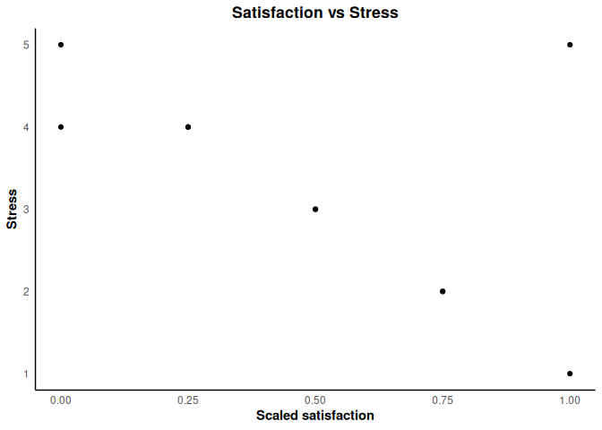

The goal of this package is to provide convenient tools for psychology survey data processing and APA-style visualizations.
Installation
You can install the development version from GitHub with:
# install.packages("pak")
pak::pak("ADC-405-S26/Pyo_project4")Example
This is a basic example which shows you how to scale survey responses and use the custom APA theme:
library(project)
data(survey_demo)
# 1. Scale satisfaction scores (1-5 Likert to 0-1)
survey_demo$scaled_sat <- scale_responses(survey_demo$satisfaction)
head(survey_demo[, c("id", "satisfaction", "scaled_sat")])
#> id satisfaction scaled_sat
#> 1 1 1 0.00
#> 2 2 3 0.50
#> 3 3 4 0.75
#> 4 4 5 1.00
#> 5 5 2 0.25
#> 6 6 3 0.50
library(ggplot2)
# 2. Simple APA-style plot
ggplot(survey_demo, aes(x = scaled_sat, y = stress)) +
geom_point() +
labs(title = "Satisfaction vs Stress",
x = "Scaled satisfaction",
y = "Stress") +
theme_apa()